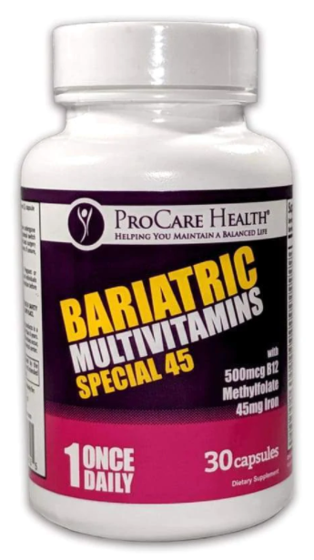

Multivitamin For Women and Bariatric Vitamins
A good Multivitamin For Women should contain all the nutrients your body needs, but it should not contain any added ingredients. You should choose a product that contains only natural ingredients, and avoid the ones with artificial fillers. Some companies use synthetic fillers to make their products smaller, but they save money by doing so. Look for supplements with a third-party seal, or certification, as proof that they are pure. The key to choosing a good multivitamin is to read the label before you buy it. bariatric multivitamin
A good multivitamin should contain all of the vitamins your body needs. Some women may need a supplement because they eat a special diet, or because they suffer from a health condition that makes it difficult to get the proper amounts of vitamins from their diet. This is the case with many people who are on a special diet, or who need to take vitamin supplements for a specific ailment. Taking a multivitamin can make life much easier for those who struggle with a particular nutrient in their diet.
A multivitamin for women is important to maintain your health. It's especially important for women who are on a restricted diet. Taking a multivitamin with a probiotic can help women maintain good digestive health. A good multivitamin for postmenopausal women can support their natural balance of hormones and improve their quality of life. This way, they'll feel better and retain more of their nutrients.
Another multivitamin for women that you can use is Powher Multivitamin. It contains a number of nutrients that are beneficial for female health. It contains B-vitamins and vitamin D, which improves the endurance of exercise. It also has anti-aging properties. To take Powher Multivitamin, you can take one capsule each day with 8 oz of water. It's important to remember that taking the pill on an empty stomach can lead to bloating and diarrhea.

A women's multivitamin is the best choice for overall health. It can prevent deficiencies and support a healthy pregnancy. Different women's multivitamins will include additional nutrients for specific nutritional concerns, such as iron and calcium. You can also choose a multivitamin that contains these two nutrients. A woman's body needs these nutrients to maintain a healthy body. In addition to the benefits for her health, a women's daily multivitamin can address the nutritional gaps in her daily diet.
It is important to choose a quality multivitamin. You should not take more than the recommended amount, and it's important to take it in the morning and before going to bed. However, if you're not able to do so, you can still take one capsule per day. Opti-Women is a good multivitamin for active women, and it's also made by One A Day, a reputable company.
A multivitamin for women is very important for maintaining your health. The body's nutritional requirements vary. For example, men's multivitamins are for active people, and women's multivitamins for senior adults contain high-doses of essential nutrients. It is essential for pregnant and nursing mothers to take a multivitamin for women daily. They should also have a balanced diet. The nutrients in a multivitamin should be enough for a woman's daily requirements. bariatric vitamins
Some women's multivitamins contain complexes that focus on specific health concerns. These include ingredients for menopause, energy, skin and hair health. Other multivitamins include specialized formulas for older women. If you're taking a multivitamin for women, you should choose one with a high level of folic acid. A woman's diet is the best source of vitamins and minerals.
A woman's nutritional needs are different than that of men. Her age, gender, and lifestyle affect her nutritional needs, so she should take a daily multivitamin. If you're pregnant or planning to get pregnant, you should take a multivitamin for women. The best women's multivitamin for active women contains 40 active ingredients, including 23 vitamins and minerals. It's important to take a good quality Multivitamin for women to maximize its effectiveness.
A good multivitamin for women should contain nine essential ingredients. Omega-3 DHA is an important fatty acid. Other ingredients should include magnesium, boron, chelated iron, vitamin E, and methylated folate. In addition to these, a good women's multivitamin should also contain zinc. Some women are at risk of deficiency in certain vitamins. These vitamin supplements can help them overcome this problem.